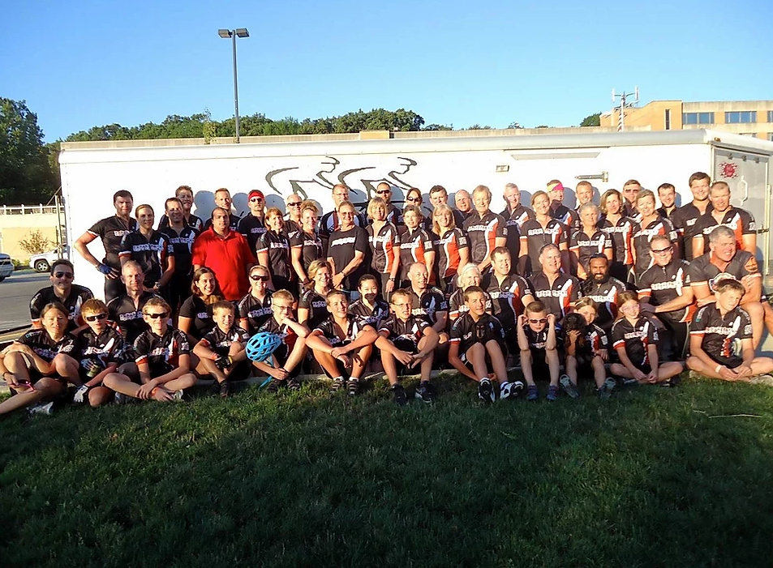

About us
Pedaling for Parkinson's is a foundation dedicated to the study of aerobic exercise as it relates to parkinson's disease. It was founded by Dr. Jay Alberts, Cleveland Clinic neuroscientist and researcher, as well as Cathy Fraizer, a woman affected by parkinson's. During RAGBRAI 2003, when Dr. Alberts and Ms. Fraizer were riding on a tandem bicycle, Fraizer discovered at the end of the day that she felt almost as if she wasn't suffering from parkinson's. From this, the two realised that the aerobic exercise from the cycling had provided this reduction in symtoms.
How Does This Help with Parkinson's?
PFP is dedicated to the relief of parkinson's disease through aerobic exercise. Parkinson's reduces the amount of dopamine in a patient's brain, impairing their ability to move muscles smoothly, leading to tremors. It additionally can lead to more rigid muscles, impaired posture and balance, changes in speech, and increased difficulty with activities which require smaller movements, such as writing or brusing your teeth. On a different, yet equally important note, the reduction of dopamine in the brain can lead to depression, as dopamine is one of the main pleasure chemicals in the brain, and a lack of which can cause depression, anxiety, and other mental illnesses. The belief is that aerobic exercise such as riding a bike allows for more efficient transfer of dopamine, allowing the brain to use more of the dopamine it is producing, leading to smoother muscle movement in parkinson's patients, as well as helping to alleviate the other symptoms mentioned above.
But Why Cycling?
Cycling is simply one of the easier aerobic exercises for those affected by parkinson's to perform. Patients will use one of three types of bike, either a stationary one for standard exercises and classes, the back of a multi-seat bicycle, such as a tandem, or on a bike similar to the one on the right. This has three wheels (one is obscured in the picutre), and allows riders to sit in a more relaxed position. All of these options require less balancing than a standard bike, thus making them good options for parkinson's patients who want to get aerobic exercise. Additionally, cycling makes more sense than something such as running, as this will require more balancing, and patients often find themselves unable to run anyways, due to the impaired movement speed parkinson's causes.